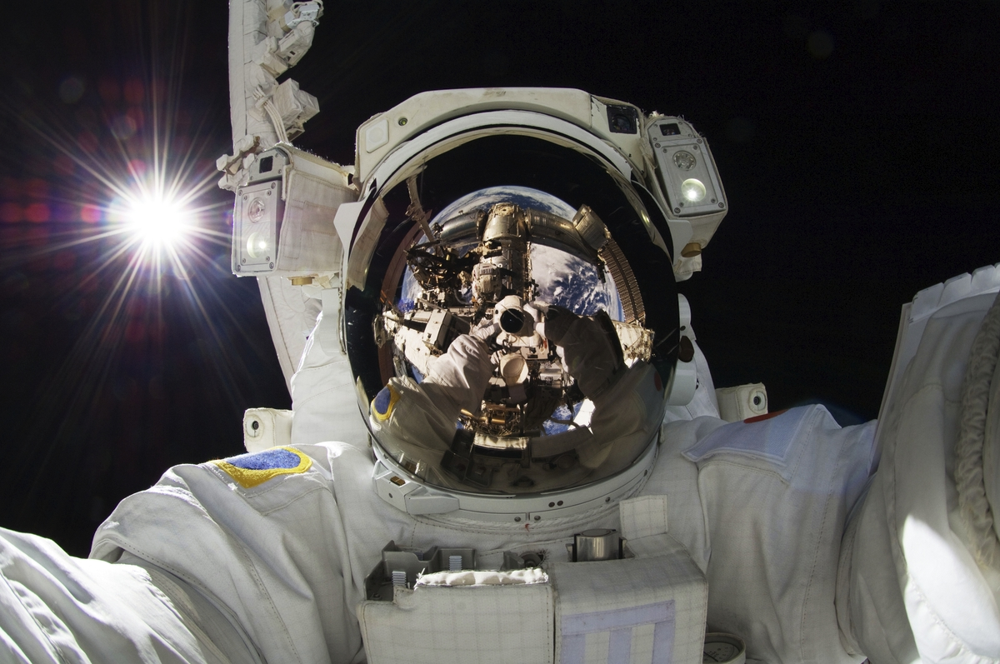

Experiences

Experiences you can have with Star Shuttle are:
- Space Tourism: You can visit the Moon, Mars, and Even the sun!
- Space Expeditions: You can go on planet tours that are led by our extraordinary staff!
- Astronaut Training: We will teach you the basics of how to be an astronaut and space pilot through simulations and experienced astronauts!
- Planetary Research: You can observe the artifacts we collected around the solar system. We collected dust from the moon, water from mars, astroid samples, and much more!